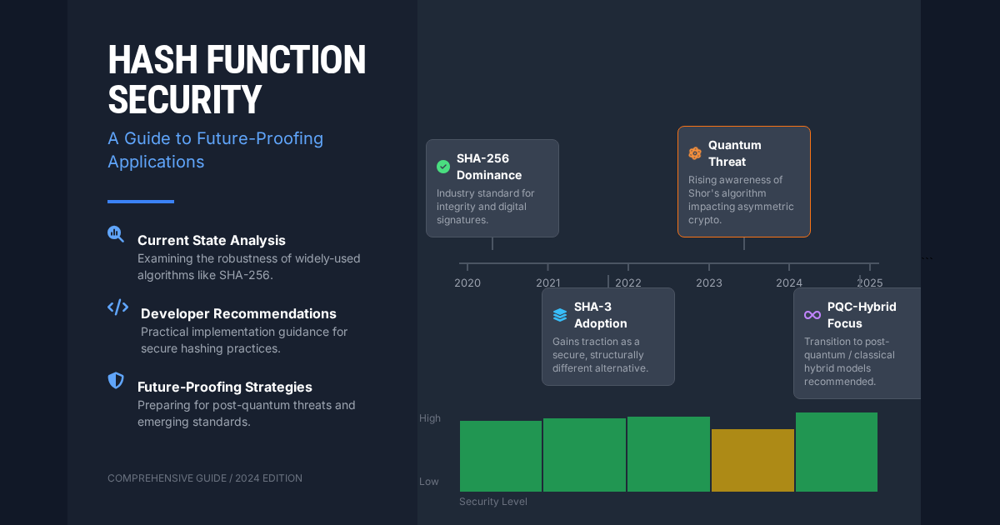

The cryptographic landscape in 2025 presents both familiar challenges and emerging threats. While SHA-256 remains secure against classical attacks, quantum computing advances, new attack vectors, and evolving compliance requirements demand updated security strategies.
This comprehensive guide examines the current state of hash function security, practical recommendations for developers, and future-proofing strategies for modern applications.
Current Threat Landscape
Classical Attack Evolution
Traditional cryptanalysis continues to evolve, but established algorithms maintain their resistance:
- SHA-256: No practical attacks discovered since 2020
- SHA-512: Remains cryptographically sound with increased margin
- SHA-3: Different construction provides valuable diversity
- BLAKE2/BLAKE3: Modern designs showing excellent resistance
The Quantum Computing Reality Check
Quantum computing progress impacts hash functions differently than asymmetric cryptography:
// Quantum impact assessment for hash functions
const quantumImpact = {
grover_algorithm: {
effect: "Square root speedup for brute force attacks",
sha256_strength: "Reduced from 2^256 to 2^128 (still secure)",
sha512_strength: "Reduced from 2^512 to 2^256 (excellent security)",
timeline: "Practical threat: 15-20 years"
},
current_recommendation: {
short_term: "SHA-256 remains secure for most applications",
long_term: "SHA-512 or SHA-3 for quantum resistance",
critical_systems: "Consider post-quantum hash candidates"
}
};
Practical Attack Vectors in 2025
Real-world threats focus on implementation flaws rather than algorithmic breaks:
- Side-channel attacks: Timing, power, and electromagnetic analysis
- Implementation bugs: Memory corruption, buffer overflows
- Weak randomness: Poor salt generation, predictable inputs
- Protocol misuse: Hash length extension, collision attacks
Algorithm Status in 2025
Secure Algorithms
// Current security recommendations
const secureAlgorithms = {
recommended: {
sha256: {
status: "Industry standard",
security_level: "128-bit (post-quantum: 64-bit)",
use_cases: ["General applications", "Blockchain", "Certificates"],
notes: "Hardware accelerated on most platforms"
},
sha512: {
status: "High security",
security_level: "256-bit (post-quantum: 128-bit)",
use_cases: ["High-value assets", "Long-term security"],
notes: "Better quantum resistance"
},
sha3_256: {
status: "Modern alternative",
security_level: "128-bit (post-quantum: 64-bit)",
use_cases: ["Diversification", "New systems"],
notes: "Different mathematical foundation"
},
blake2b: {
status: "Fast and secure",
security_level: "256-bit (post-quantum: 128-bit)",
use_cases: ["Performance-critical", "Modern applications"],
notes: "Excellent speed-security balance"
}
}
};
Deprecated and Vulnerable Algorithms
// Algorithms to avoid in 2025
const deprecatedAlgorithms = {
broken: {
md5: {
status: "Cryptographically broken",
vulnerabilities: ["Collision attacks", "Preimage attacks"],
last_safe_use: "Never for security (2025 guidance)",
acceptable_uses: ["Legacy checksums", "Non-cryptographic hashing"]
},
sha1: {
status: "Deprecated",
vulnerabilities: ["Practical collision attacks"],
phase_out: "Complete by end of 2025",
acceptable_uses: ["Git commits (legacy)", "Non-security contexts"]
}
},
concerning: {
sha224: {
status: "Limited security margin",
issue: "Truncated SHA-256 with reduced output",
recommendation: "Use full SHA-256 instead"
}
}
};
Implementation Security
Secure Hash Implementation Patterns
// Secure hash implementation template
class SecureHasher {
constructor(algorithm = 'sha256') {
this.validateAlgorithm(algorithm);
this.algorithm = algorithm;
}
validateAlgorithm(algorithm) {
const approved = ['sha256', 'sha512', 'sha3-256', 'sha3-512', 'blake2b'];
if (!approved.includes(algorithm)) {
throw new Error(`Algorithm ${algorithm} not approved for security use`);
}
}
// Secure password hashing with proper parameters
hashPassword(password, customSalt = null) {
const salt = customSalt || crypto.getRandomValues(new Uint8Array(32));
// Use PBKDF2 with strong parameters
const iterations = this.getRecommendedIterations();
const keyLength = this.algorithm === 'sha512' ? 64 : 32;
return {
hash: crypto.pbkdf2Sync(password, salt, iterations, keyLength, this.algorithm),
salt: salt,
iterations: iterations,
algorithm: this.algorithm,
version: '2025.1' // For future migration tracking
};
}
// Context-aware iteration counts
getRecommendedIterations() {
const baseIterations = {
'sha256': 600000, // OWASP 2023+ recommendation
'sha512': 210000, // Adjusted for slower algorithm
'sha3-256': 600000,
'sha3-512': 210000,
'blake2b': 600000
};
return baseIterations[this.algorithm];
}
// Secure file hashing with progress tracking
async hashFile(file, progressCallback) {
const hasher = crypto.createHash(this.algorithm);
const chunkSize = 1024 * 1024; // 1MB chunks
let processed = 0;
return new Promise((resolve, reject) => {
const reader = new FileReader();
const processChunk = (offset) => {
const chunk = file.slice(offset, offset + chunkSize);
reader.onload = (event) => {
const data = new Uint8Array(event.target.result);
hasher.update(data);
processed += data.length;
progressCallback?.(processed / file.size);
if (processed < file.size) {
processChunk(processed);
} else {
resolve({
hash: hasher.digest('hex'),
algorithm: this.algorithm,
fileSize: file.size,
timestamp: Date.now()
});
}
};
reader.onerror = reject;
reader.readAsArrayBuffer(chunk);
};
processChunk(0);
});
}
// Time-constant hash comparison
verifyHash(providedHash, expectedHash) {
if (providedHash.length !== expectedHash.length) {
return false;
}
let result = 0;
for (let i = 0; i < providedHash.length; i++) {
result |= providedHash.charCodeAt(i) ^ expectedHash.charCodeAt(i);
}
return result === 0;
}
}
Side-Channel Attack Prevention
// Protecting against timing attacks
class TimingSafeHasher extends SecureHasher {
// Constant-time string comparison
constantTimeCompare(a, b) {
if (a.length !== b.length) {
// Still perform comparison to avoid timing leaks
b = a;
}
let result = 0;
for (let i = 0; i < a.length; i++) {
result |= a.charCodeAt(i) ^ b.charCodeAt(i);
}
return result === 0 && a.length === arguments[1].length;
}
// Rate limiting to prevent brute force
async rateLimitedVerification(providedHash, expectedHash, identifier) {
const key = `hash_verify_${identifier}`;
const attempts = await this.getAttemptCount(key);
if (attempts > 10) {
const delay = Math.min(Math.pow(2, attempts - 10) * 1000, 300000); // Max 5 minutes
await this.sleep(delay);
}
const result = this.constantTimeCompare(providedHash, expectedHash);
if (!result) {
await this.incrementAttemptCount(key);
} else {
await this.resetAttemptCount(key);
}
return result;
}
sleep(ms) {
return new Promise(resolve => setTimeout(resolve, ms));
}
}
Application-Specific Security Guidance
Web Application Security
// Secure session management
class SecureSessionManager {
constructor() {
this.hasher = new SecureHasher('sha256');
}
generateSessionToken() {
// Use cryptographically secure random bytes
const randomBytes = crypto.getRandomValues(new Uint8Array(32));
const timestamp = Date.now().toString();
// Hash the combination for additional security
const combinedData = new Uint8Array(randomBytes.length + timestamp.length);
combinedData.set(randomBytes);
combinedData.set(new TextEncoder().encode(timestamp), randomBytes.length);
return this.hasher.hashData(combinedData).substring(0, 64); // 256-bit token
}
// Secure API key generation
generateAPIKey(userId, scope, expirationDays = 365) {
const keyMaterial = {
userId: userId,
scope: scope,
issued: Date.now(),
expires: Date.now() + (expirationDays * 24 * 60 * 60 * 1000),
nonce: crypto.getRandomValues(new Uint8Array(16))
};
const keyData = JSON.stringify(keyMaterial);
const signature = this.hasher.hashData(keyData + process.env.API_SECRET);
return {
key: Buffer.from(keyData).toString('base64'),
signature: signature,
expires: keyMaterial.expires
};
}
}
Blockchain and Cryptocurrency Applications
// Blockchain-grade security requirements
class BlockchainHasher {
constructor() {
// Bitcoin uses double SHA-256 for additional security
this.primaryHash = 'sha256';
}
// Double hashing for maximum security
doubleHash(data) {
const firstHash = crypto.createHash(this.primaryHash).update(data).digest();
const secondHash = crypto.createHash(this.primaryHash).update(firstHash).digest('hex');
return secondHash;
}
// Merkle tree construction
buildMerkleTree(transactions) {
if (transactions.length === 0) return null;
let currentLevel = transactions.map(tx => this.doubleHash(tx));
while (currentLevel.length > 1) {
const nextLevel = [];
for (let i = 0; i < currentLevel.length; i += 2) {
const left = currentLevel[i];
const right = i + 1 < currentLevel.length ? currentLevel[i + 1] : left;
const combined = left + right;
nextLevel.push(this.doubleHash(combined));
}
currentLevel = nextLevel;
}
return currentLevel[0];
}
// Proof of work validation
validateProofOfWork(blockHash, difficulty) {
const target = '0'.repeat(Math.floor(difficulty / 4)) +
(16 >> (difficulty % 4)).toString(16);
return blockHash <= target;
}
}
File Integrity and Digital Signatures
// Comprehensive file integrity system
class FileIntegrityManager {
constructor() {
this.hasher = new SecureHasher('sha256');
this.strongHasher = new SecureHasher('sha512'); // For high-value files
}
// Multi-algorithm file verification
async generateFileSignature(file, includeMetadata = true) {
const hashes = {
sha256: await this.hasher.hashFile(file),
sha512: await this.strongHasher.hashFile(file)
};
const metadata = includeMetadata ? {
filename: file.name,
size: file.size,
lastModified: file.lastModified,
type: file.type
} : null;
return {
hashes: hashes,
metadata: metadata,
timestamp: Date.now(),
version: '2025.1'
};
}
// Verify file against multiple hash algorithms
async verifyFileIntegrity(file, expectedSignature) {
const currentSignature = await this.generateFileSignature(file, true);
// Verify both algorithms must match
const sha256Match = this.hasher.verifyHash(
currentSignature.hashes.sha256.hash,
expectedSignature.hashes.sha256.hash
);
const sha512Match = this.strongHasher.verifyHash(
currentSignature.hashes.sha512.hash,
expectedSignature.hashes.sha512.hash
);
return {
valid: sha256Match && sha512Match,
details: {
sha256: sha256Match,
sha512: sha512Match,
metadata: this.compareMetadata(currentSignature.metadata, expectedSignature.metadata)
}
};
}
compareMetadata(current, expected) {
if (!current || !expected) return null;
return {
filename: current.filename === expected.filename,
size: current.size === expected.size,
type: current.type === expected.type
};
}
}
Compliance and Standards in 2025
Regulatory Requirements
// Compliance-aware algorithm selection
const complianceRequirements = {
fips_140: {
approved_algorithms: ['sha256', 'sha512', 'sha3-256', 'sha3-512'],
deprecated: ['sha1'],
prohibited: ['md5'],
notes: "FIPS 140-3 supersedes 140-2 in 2025"
},
common_criteria: {
evaluation_levels: {
eal4: ['sha256', 'sha512'],
eal5: ['sha512', 'sha3-512'],
eal6_plus: ['sha512', 'sha3-512', 'post_quantum_candidates']
}
},
industry_specific: {
payment_card: {
standard: "PCI DSS 4.0",
minimum: "sha256",
recommended: "sha512",
key_derivation: "PBKDF2 with 600k+ iterations"
},
healthcare: {
standard: "HIPAA Security Rule",
minimum: "sha256",
data_integrity: "Required for PHI",
audit_trail: "Hash all access logs"
},
financial: {
standard: "Various (SOX, Basel III)",
minimum: "sha256",
transaction_integrity: "Multi-algorithm verification recommended"
}
}
};
Migration Planning
// Systematic algorithm migration
class HashMigrationManager {
constructor() {
this.currentAlgorithms = new Map();
this.migrationPlan = new Map();
}
// Assess current hash usage
assessCurrentUsage() {
const assessment = {
critical_immediate: [], // Must migrate within 6 months
high_priority: [], // Should migrate within 1 year
medium_priority: [], // Can migrate within 2 years
low_priority: [] // Legacy systems, careful planning
};
// Example assessment logic
this.currentAlgorithms.forEach((usage, algorithm) => {
if (algorithm === 'md5' && usage.security_critical) {
assessment.critical_immediate.push(usage);
} else if (algorithm === 'sha1') {
assessment.high_priority.push(usage);
} else if (algorithm === 'sha224') {
assessment.medium_priority.push(usage);
}
});
return assessment;
}
// Create migration timeline
createMigrationPlan(assessment) {
return {
phase1: {
timeframe: "0-6 months",
targets: assessment.critical_immediate,
new_algorithm: "sha256",
approach: "Emergency replacement"
},
phase2: {
timeframe: "6-12 months",
targets: assessment.high_priority,
new_algorithm: "sha256",
approach: "Planned migration with backward compatibility"
},
phase3: {
timeframe: "1-2 years",
targets: assessment.medium_priority,
new_algorithm: "sha512",
approach: "Strategic upgrade"
}
};
}
// Implement dual-algorithm transition
implementDualHash(data, oldAlgorithm, newAlgorithm) {
const oldHash = crypto.createHash(oldAlgorithm).update(data).digest('hex');
const newHash = crypto.createHash(newAlgorithm).update(data).digest('hex');
return {
primary: newHash,
legacy: oldHash,
algorithm: newAlgorithm,
migration_timestamp: Date.now()
};
}
}
Future-Proofing Strategies
Quantum-Resistant Planning
// Quantum-resistant hash strategy
class QuantumResistantHasher {
constructor() {
this.currentBest = 'sha512'; // Strong against quantum
this.diversified = 'sha3-512'; // Different mathematical base
this.experimental = 'blake3'; // Modern high-performance option
}
// Multi-algorithm approach for critical data
quantumResistantHash(data) {
const hashes = {
primary: crypto.createHash(this.currentBest).update(data).digest('hex'),
secondary: crypto.createHash(this.diversified).update(data).digest('hex'),
timestamp: Date.now(),
quantum_safe_level: "medium-high"
};
// Combine hashes for additional security
const combined = hashes.primary + hashes.secondary;
hashes.composite = crypto.createHash('sha3-256').update(combined).digest('hex');
return hashes;
}
// Algorithm agility framework
createAlgorithmAgnosticHash(data, algorithmVersion = '2025.1') {
const algorithms = this.getApprovedAlgorithms(algorithmVersion);
const results = {};
algorithms.forEach(algorithm => {
results[algorithm] = crypto.createHash(algorithm).update(data).digest('hex');
});
return {
hashes: results,
version: algorithmVersion,
created: Date.now(),
upgrade_path: this.getUpgradePath(algorithmVersion)
};
}
getApprovedAlgorithms(version) {
const versionMap = {
'2025.1': ['sha256', 'sha512', 'sha3-256'],
'2025.2': ['sha512', 'sha3-512', 'blake3'],
'2026.1': ['sha3-512', 'blake3', 'post-quantum-candidate']
};
return versionMap[version] || versionMap['2025.1'];
}
getUpgradePath(currentVersion) {
const paths = {
'2025.1': '2025.2',
'2025.2': '2026.1'
};
return paths[currentVersion] || null;
}
}
Monitoring and Alert Systems
// Security monitoring for hash functions
class HashSecurityMonitor {
constructor() {
this.securityEvents = [];
this.thresholds = {
unusual_algorithm_usage: 100, // Alert if deprecated algorithm used
hash_collision_detected: 1, // Immediate alert
performance_degradation: 2.0, // 2x slower than baseline
failed_verifications: 10 // Per hour
};
}
// Monitor hash operations
monitorHashOperation(algorithm, operation, duration, success) {
const event = {
timestamp: Date.now(),
algorithm: algorithm,
operation: operation,
duration: duration,
success: success
};
this.securityEvents.push(event);
this.checkSecurityThresholds(event);
// Keep only recent events (last 24 hours)
const cutoff = Date.now() - (24 * 60 * 60 * 1000);
this.securityEvents = this.securityEvents.filter(e => e.timestamp > cutoff);
}
checkSecurityThresholds(event) {
// Alert on deprecated algorithm usage
if (['md5', 'sha1'].includes(event.algorithm)) {
this.triggerAlert('deprecated_algorithm', {
algorithm: event.algorithm,
recommendation: 'Migrate to SHA-256 or higher'
});
}
// Alert on performance issues
const baseline = this.getPerformanceBaseline(event.algorithm);
if (event.duration > baseline * this.thresholds.performance_degradation) {
this.triggerAlert('performance_degradation', {
algorithm: event.algorithm,
expected: baseline,
actual: event.duration
});
}
// Alert on failed verifications
if (!event.success && event.operation === 'verify') {
const recentFailures = this.countRecentFailures();
if (recentFailures > this.thresholds.failed_verifications) {
this.triggerAlert('verification_failures', {
count: recentFailures,
timeframe: '1 hour'
});
}
}
}
triggerAlert(type, details) {
console.warn(`SECURITY ALERT: ${type}`, details);
// In production: send to monitoring system, notify security team
}
}
Testing and Validation in 2025
Comprehensive Test Vectors
// Extensive test suite for hash security validation
class HashSecurityTester {
constructor() {
this.testVectors = this.loadTestVectors();
this.performanceBaselines = new Map();
}
loadTestVectors() {
return {
// Standard test vectors from NIST
nist_vectors: {
sha256: [
{ input: "", expected: "e3b0c44298fc1c149afbf4c8996fb92427ae41e4649b934ca495991b7852b855" },
{ input: "abc", expected: "ba7816bf8f01cfea414140de5dae2223b00361a396177a9cb410ff61f20015ad" },
{ input: "abcdbcdecdefdefgefghfghighijhijkijkljklmklmnlmnomnopnopq",
expected: "248d6a61d20638b8e5c026930c3e6039a33ce45964ff2167f6ecedd419db06c1" }
],
sha512: [
{ input: "", expected: "cf83e1357eefb8bdf1542850d66d8007d620e4050b5715dc83f4a921d36ce9ce47d0d13c5d85f2b0ff8318d2877eec2f63b931bd47417a81a538327af927da3e" },
{ input: "abc", expected: "ddaf35a193617abacc417349ae20413112e6fa4e89a97ea20a9eeee64b55d39a2192992a274fc1a836ba3c23a3feebbd454d4423643ce80e2a9ac94fa54ca49f" }
]
},
// Edge cases and security tests
security_vectors: {
collision_resistance: [
// Test known collision attempts
{ algorithm: 'sha256', input: this.generateNearCollisionInput(), should_differ: true }
],
avalanche_effect: [
// Small input changes should dramatically change output
{ algorithm: 'sha256', input1: 'test', input2: 'Test', should_differ_significantly: true }
]
}
};
}
// Comprehensive security validation
async runSecurityTests() {
const results = {
algorithm_validation: {},
performance_tests: {},
security_properties: {},
compliance_checks: {}
};
// Test each approved algorithm
const algorithms = ['sha256', 'sha512', 'sha3-256', 'sha3-512'];
for (const algorithm of algorithms) {
results.algorithm_validation[algorithm] = await this.validateAlgorithm(algorithm);
results.performance_tests[algorithm] = await this.benchmarkAlgorithm(algorithm);
results.security_properties[algorithm] = await this.testSecurityProperties(algorithm);
}
results.compliance_checks = this.checkCompliance(results);
return results;
}
async validateAlgorithm(algorithm) {
const vectors = this.testVectors.nist_vectors[algorithm] || [];
const results = [];
for (const vector of vectors) {
const hash = crypto.createHash(algorithm)
.update(vector.input)
.digest('hex');
results.push({
input: vector.input,
expected: vector.expected,
actual: hash,
passed: hash === vector.expected
});
}
return {
total_tests: results.length,
passed: results.filter(r => r.passed).length,
success_rate: results.filter(r => r.passed).length / results.length,
details: results
};
}
async benchmarkAlgorithm(algorithm) {
const testData = crypto.randomBytes(1024 * 1024); // 1MB test data
const iterations = 100;
const startTime = performance.now();
for (let i = 0; i < iterations; i++) {
crypto.createHash(algorithm).update(testData).digest('hex');
}
const endTime = performance.now();
const totalTime = endTime - startTime;
const avgTime = totalTime / iterations;
const throughput = (testData.length * iterations) / (totalTime / 1000); // bytes per second
return {
average_time_ms: avgTime,
throughput_mbps: throughput / (1024 * 1024),
total_iterations: iterations,
data_size_mb: testData.length / (1024 * 1024)
};
}
async testSecurityProperties(algorithm) {
return {
avalanche_effect: await this.testAvalancheEffect(algorithm),
collision_resistance: await this.testCollisionResistance(algorithm),
preimage_resistance: await this.testPreimageResistance(algorithm)
};
}
async testAvalancheEffect(algorithm) {
// Test that small input changes cause large output changes
const baseInput = "security test input";
const baseHash = crypto.createHash(algorithm).update(baseInput).digest('hex');
const variations = [
baseInput + "1", // append character
baseInput.slice(1), // remove character
baseInput.replace('s', 'S') // change case
];
const results = variations.map(variation => {
const varHash = crypto.createHash(algorithm).update(variation).digest('hex');
const hammingDistance = this.calculateHammingDistance(baseHash, varHash);
const expectedDistance = baseHash.length * 4 / 2; // 50% for good avalanche effect
return {
input: variation,
hamming_distance: hammingDistance,
avalanche_ratio: hammingDistance / (baseHash.length * 4),
good_avalanche: hammingDistance > expectedDistance * 0.4 // At least 40% bit changes
};
});
return {
tests_passed: results.filter(r => r.good_avalanche).length,
total_tests: results.length,
average_avalanche_ratio: results.reduce((sum, r) => sum + r.avalanche_ratio, 0) / results.length,
details: results
};
}
calculateHammingDistance(hash1, hash2) {
let distance = 0;
const minLength = Math.min(hash1.length, hash2.length);
for (let i = 0; i < minLength; i++) {
const byte1 = parseInt(hash1.substring(i * 2, i * 2 + 2), 16);
const byte2 = parseInt(hash2.substring(i * 2, i * 2 + 2), 16);
const xor = byte1 ^ byte2;
// Count set bits
let bits = xor;
while (bits) {
distance += bits & 1;
bits >>= 1;
}
}
return distance;
}
}
Industry Trends and Emerging Threats
AI and Machine Learning Impact
// AI-assisted cryptanalysis considerations
const aiCryptanalysisThreats = {
current_capabilities: {
pattern_recognition: "Can identify weak implementations",
side_channel_analysis: "Automated timing attack detection",
brute_force_optimization: "GPU/TPU accelerated attacks",
implementation_bugs: "Static analysis for crypto vulnerabilities"
},
defensive_strategies: {
constant_time_implementation: "Essential for all crypto operations",
hardware_security_modules: "Isolate crypto operations from analysis",
algorithm_diversity: "Multiple algorithms reduce ML training effectiveness",
regular_security_audits: "AI-assisted defensive analysis"
},
future_threats: {
quantum_ml_hybrid: "Combined quantum-classical attacks",
adversarial_inputs: "Inputs designed to exploit hash weaknesses",
implementation_fingerprinting: "Identifying crypto libraries from outputs"
}
};
Cloud and Edge Computing Considerations
// Security considerations for distributed hash operations
class DistributedHashSecurity {
constructor(environment = 'cloud') {
this.environment = environment;
this.securityLevel = this.determineSecurityLevel(environment);
}
determineSecurityLevel(environment) {
const levels = {
'local': { trust: 'high', algorithm: 'sha256', acceleration: 'hardware' },
'private_cloud': { trust: 'medium-high', algorithm: 'sha256', acceleration: 'software' },
'public_cloud': { trust: 'medium', algorithm: 'sha512', acceleration: 'software' },
'edge': { trust: 'low', algorithm: 'sha512', acceleration: 'limited' },
'untrusted': { trust: 'none', algorithm: 'client-side-only', acceleration: 'none' }
};
return levels[environment] || levels['untrusted'];
}
// Environment-aware hash selection
selectHashAlgorithm(dataClassification = 'standard') {
const requirements = {
'public': { min_algorithm: 'sha256', cloud_safe: true },
'internal': { min_algorithm: 'sha256', cloud_safe: true },
'confidential': { min_algorithm: 'sha512', cloud_safe: false },
'restricted': { min_algorithm: 'sha3-512', cloud_safe: false }
};
const requirement = requirements[dataClassification];
if (!requirement.cloud_safe && ['public_cloud', 'edge'].includes(this.environment)) {
throw new Error(`Data classification ${dataClassification} not suitable for ${this.environment}`);
}
return requirement.min_algorithm;
}
// Secure multi-party hash verification
async distributedHashVerification(data, expectedHash, peers) {
const results = await Promise.all(
peers.map(peer => this.requestHashFromPeer(peer, data))
);
const localHash = this.computeLocalHash(data);
results.push({ peer: 'local', hash: localHash });
// Consensus verification
const hashCounts = new Map();
results.forEach(result => {
const count = hashCounts.get(result.hash) || 0;
hashCounts.set(result.hash, count + 1);
});
const consensus = Array.from(hashCounts.entries())
.sort((a, b) => b[1] - a[1])[0];
return {
consensus_hash: consensus[0],
agreement_count: consensus[1],
total_peers: results.length,
matches_expected: consensus[0] === expectedHash,
consensus_ratio: consensus[1] / results.length
};
}
}
Actionable Recommendations for 2025
Immediate Actions (Next 30 Days)
- Audit current hash usage: Identify all MD5 and SHA-1 implementations
- Update security policies: Prohibit MD5 for any security purpose
- Implement monitoring: Track hash algorithm usage and performance
- Review compliance requirements: Ensure alignment with 2025 standards
Short-term Goals (3-6 Months)
- Complete MD5 migration: Replace all security-critical MD5 usage
- Standardize on SHA-256: Make it the default for new applications
- Implement proper salt handling: Ensure all password hashing uses unique salts
- Add algorithm agility: Design systems to support future algorithm changes
Long-term Strategy (6-24 Months)
- SHA-1 phase-out: Complete migration away from SHA-1
- Quantum preparation: Implement SHA-512 for critical systems
- Security testing: Regular cryptographic security assessments
- Team training: Ensure developers understand cryptographic best practices
Implementation Checklist
// Security implementation checklist
const securityChecklist = {
algorithm_selection: {
"Use SHA-256 as default": false,
"Avoid MD5 for security": false,
"Phase out SHA-1": false,
"Consider SHA-512 for high-security": false,
"Evaluate SHA-3 for new systems": false
},
implementation_security: {
"Use cryptographically secure random for salts": false,
"Implement constant-time comparison": false,
"Use appropriate iteration counts": false,
"Validate all inputs": false,
"Handle errors securely": false
},
operational_security: {
"Monitor hash operations": false,
"Log security events": false,
"Regular security testing": false,
"Incident response plan": false,
"Security training completed": false
},
compliance_verification: {
"FIPS compliance checked": false,
"Industry standards reviewed": false,
"Audit trail implemented": false,
"Documentation updated": false,
"Legal review completed": false
}
};
// Automatic checklist validation
function validateSecurityImplementation() {
const categories = Object.keys(securityChecklist);
const results = {};
categories.forEach(category => {
const items = securityChecklist[category];
const completed = Object.values(items).filter(Boolean).length;
const total = Object.keys(items).length;
results[category] = {
completion_rate: completed / total,
completed_items: completed,
total_items: total,
status: completed === total ? 'complete' : 'needs_attention'
};
});
return results;
}
The Path Forward
Hash function security in 2025 requires balancing current threats with future-proofing strategies. While established algorithms like SHA-256 remain secure against classical attacks, the evolving landscape demands proactive security measures.
Key principles for secure hash implementation:
- Algorithm diversity: Don't rely on a single hash function for critical systems
- Implementation security: Focus on side-channel resistance and proper error handling
- Operational monitoring: Continuously assess hash usage and performance
- Future planning: Design systems with algorithm agility for future migrations
- Compliance awareness: Stay current with regulatory and industry standards
The cryptographic community continues to develop new algorithms and strengthen existing ones. By following security best practices, implementing comprehensive monitoring, and maintaining algorithm agility, developers can build systems that remain secure against both current and emerging threats.
Remember that security is a continuous process, not a one-time implementation. Regular assessment, testing, and updates ensure your hash function usage remains secure as the threat landscape evolves.
Building secure, privacy-first tools means staying ahead of security threats. At ToolShelf, all hash operations happen locally in your browser—your data never leaves your device, providing security through isolation.
Test the latest secure hash algorithms with our Hash Generator—completely offline and private, supporting SHA-256, SHA-512, SHA-3, and BLAKE2.
Stay secure & happy coding,
— ToolShelf Team